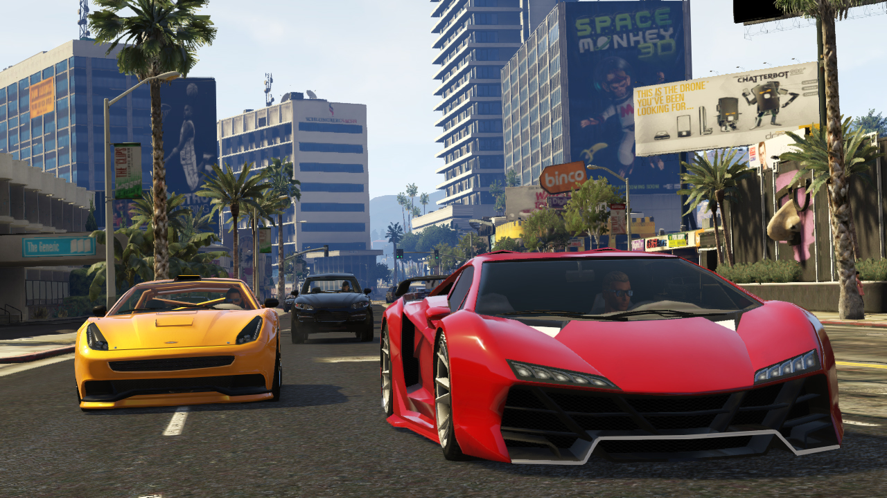

Il SIMULATORE DEFINITIVO
Smash RE è una start-up nata nel 2003. Il videogioco invece è stato sviluppato e reso pubblico nel 2005 con l’idea di invogliare la gente che possiede una patente a migliorare il proprio stile di guida andando a simulare una vera esperienza di guida nelle città oppure per ragazzi che vogliono prendere la patente, perchè riescano ad avere uno stile di guida pulito e corretto.
PER AIUTARTI NELLA VITA DI TUTTI I GIORNI

L’obbiettivo del gioco è quello di raggiungere un determinato luogo nella città cercando di causare meno danni possibili alla vettura per ottenere il numero maggiore di punti.
COSTI DI PRODUZIONE